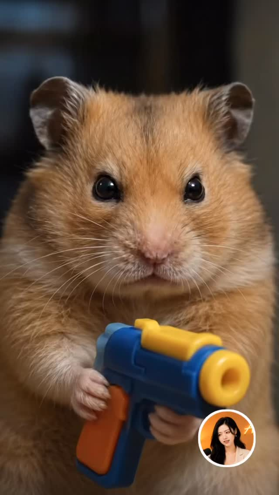

Abby 行銷周報 Threads｜動物情緒轉折短片的 Gemini / Veo Prompt 拆解
這則 Threads 分享的是短影音常見的「可愛動物 + 情緒轉折 + 道具反差」生成策略。封面圖可見一隻倉鼠近距離看向鏡頭，手上拿著藍黃玩具槍，右下角有創作者頭像；畫面像 AI 生成或 AI 影片截圖。

可複用 prompt 結構
- 主角：指定動物品種、年齡感、毛色、表情。
- 情緒：從好奇、緊張、驚訝到釋放或反轉。
- 道具：用安全、玩具化、非真實傷害的物件建立戲劇性。
- 鏡頭：近景、眼神接觸、淺景深、手持微晃。
- 時長：短片建議 5–8 秒，避免一次要求太多劇情。
- 安全描述：明確寫「toy prop」「no real harm」「cute cinematic」。
官方查核
Google Gemini / Veo 影片生成文件強調可以透過文字與圖片生成影片，但生成結果仍可能出現不穩定、物件變形、動作不連貫或角色一致性不足。這類可愛動物短片適合做社群測試，但正式投放前要人工審片。
實務提醒
- 動物持武器道具時，建議明確標示是玩具與幻想情境。
- 若用於商業廣告，要確認素材授權、品牌安全與平台政策。
- 不要把單次生成效果當作穩定產能；應建立多版抽樣與人工挑片流程。
來源
- Abby 行銷周報 Threads：動物情緒短片 prompt 分享。
- Google AI / Gemini / Veo 影片生成官方文件。